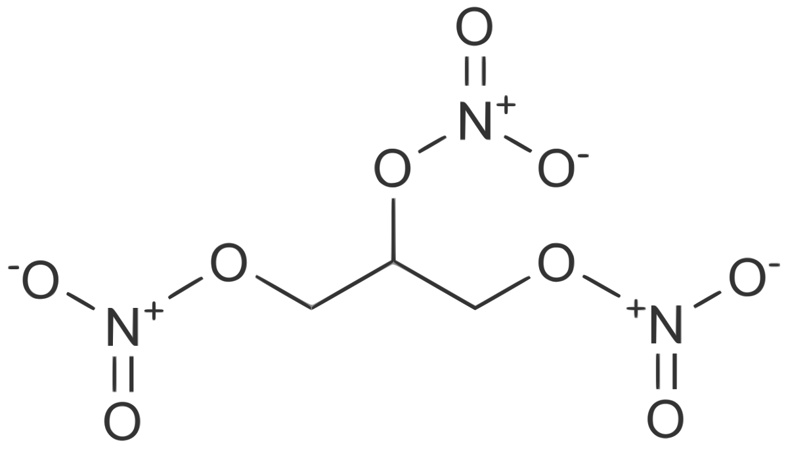

Making Nitroglycerin
By Charles Augustus Milverton
Although many people are hesitant to even touch you if you know enough about them, it doesn't hurt to have a backup.
Heat 2 cups (473 ml) water in a pot, bringing it to a boil.
Stir in the 4 cups (946 mg) of sugar in 1/2 cup (118 mg) increments.
Remove the solution from the heat and allow it to cool for 15-20 minutes.
Add color or flavoring if you don't want plain rock candy.
This recipe was obtained through extortion from a secret society bent on world domination.